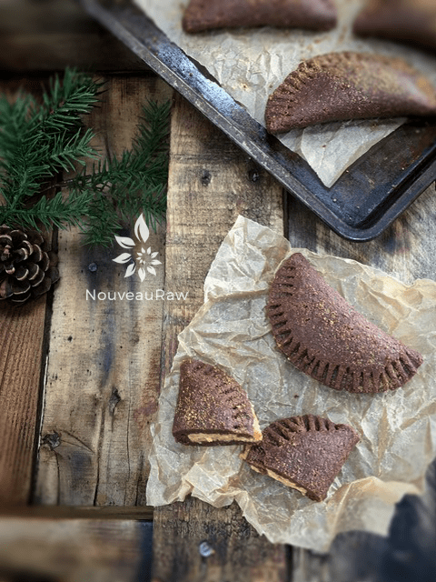

Chocolate Pastry Empanadas

~ raw, vegan, gluten-free ~
Homemade chocolate empanada dough filled with creamy butter centers. Ah. They are slightly sweet, rich in flavor, firm on the outside but creamy on the inside. Think of them as a little hand-held pastry pie.
Empanadas and I don’t have a life long relationship. I didn’t even know that they existed until my husband introduced me to them while we strolled along Venous Beach. It was a small, savory pocket of goodness that left me wanting for more. That was many years ago, and I don’t quite remember the flavor profile, so I decided just to let my creative juices flow.
That was the inspiration for this recipe. I loved the idea of creating a sweet, chocolate empanada stuffed with a creamy nut butter…. why? Like I really needed a reason but basically because they are a twist on the norm… something you don’t see every day.
The chocolate dough is straightforward to work with. It is thick but very easy to mold so it can be used in many applications. I started by rolling it into a ball shape with the palms of my hands. From there I flattened it out and much to my surprise, I found it was easy to almost “stretch” it to a flat pancake shape.
The beauty of this pastry is that you could use about anything to stuff into the center; peanut butter, jams, coconut, the list goes on.
Always be open-minded when you start working on a recipe. Don’t get locked into expectations. Let your creative side take over, and you will be delightfully surprised by the outcome. I hope you enjoy this recipe. Be sure to leave a comment below and have a blessed day. amie sue
yields 16 empanadas
- 2 1/2 cups raw fine almond flour
- 1/2 cup ground flax
- 1/2 cup raw cacao powder
- 1/4 tsp Himalayan pink salt
- 1/3 cup cold-pressed olive oil
- 1/3 cup water
- 1/3 cup maple syrup
- 1 Tbsp vanilla extract
- 1/2 tsp almond extract
- 1/2 cup+ thick, chilled nut butter
Preparation:
- In the food processor, fitted with the “S” blade, mix the almond flour, ground flax, cacao powder, and salt just until combined.
- Don’t over-process. Otherwise, too much of the natural oils within the almonds will be released… leaving you with a greasy treat.
- I use fine almond flour to see the smooth, dough-like texture but you can use ground almonds too. It will just have more visible pieces of nuts in the dough.
- As the food processor is running add in the olive oil, water, sweetener, vanilla, and almond extract. Process until well blended.
- Chocolate dough:
- Scoop out 2 Tbsp worth of dough for each empanada.
- Create a ball in the palm of your hand and place it on a non-stick sheet.
- Repeat this process until all the dough is used up.
- Nut butter:
- Use a very thick nut butter that has been chilled thoroughly. This will help with the handling of it.
- Scoop out 2 tsp of nut butter for each empanada.
- Repeat this process until you have created 16 centers.
- Flatten each ball of chocolate dough into a thin circle. Do your best to keep it a round shape, so the edges match up when folded over.
- Place 2 tsp of nut butter in the center of the chocolate circle and fold it over, lining the edges.
- Take a fork and press the edges down. This was to help seal them and make for a beautiful presentation.
- Dip the fork in water every once in a while, so it doesn’t stick to the dough.
- Place your empanadas on the mesh dehydrator screen and dehydrate for 1 hour at 145 degrees (F), then reduce to 115 degrees (F) and dehydrate for at least 5 hours or until desired dryness is achieved.
- They should be dry to the touch but soft on the inside.
- I sprinkled coconut crystals on top for decoration.
- Storage: with any of the 3 make sure that they are well sealed.
- Countertop for 3-5 days
- Fridge for 1-2 weeks.
- Freezer for 1-4 months.
Culinary Explanations:
- Why do I start the dehydrator at 145 degrees (F)? Click (here) to learn the reason behind this.
- When working with fresh ingredients, it is essential to taste test as you build a recipe. Learn why (here).
- Don’t own a dehydrator? Learn how to use your oven (here). I do, however honestly believe that it is a worthwhile investment. Click (here) to learn what I use.

© AmieSue.com